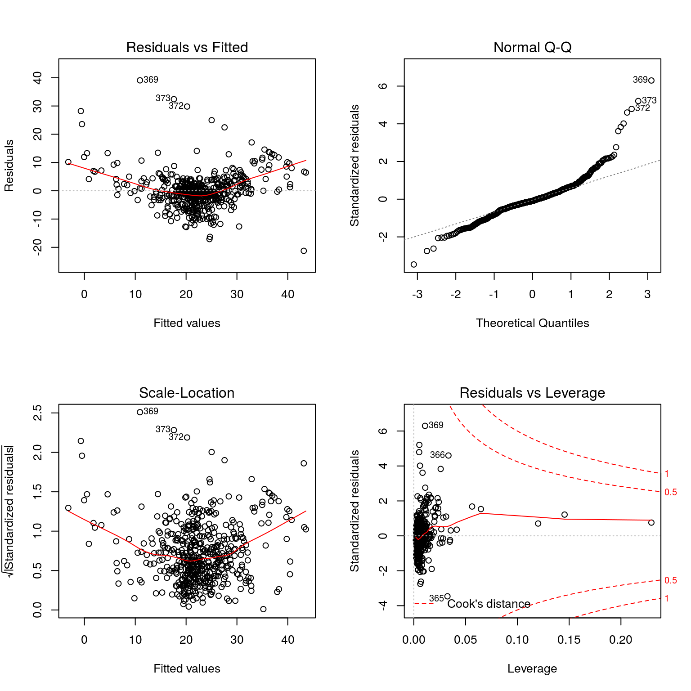
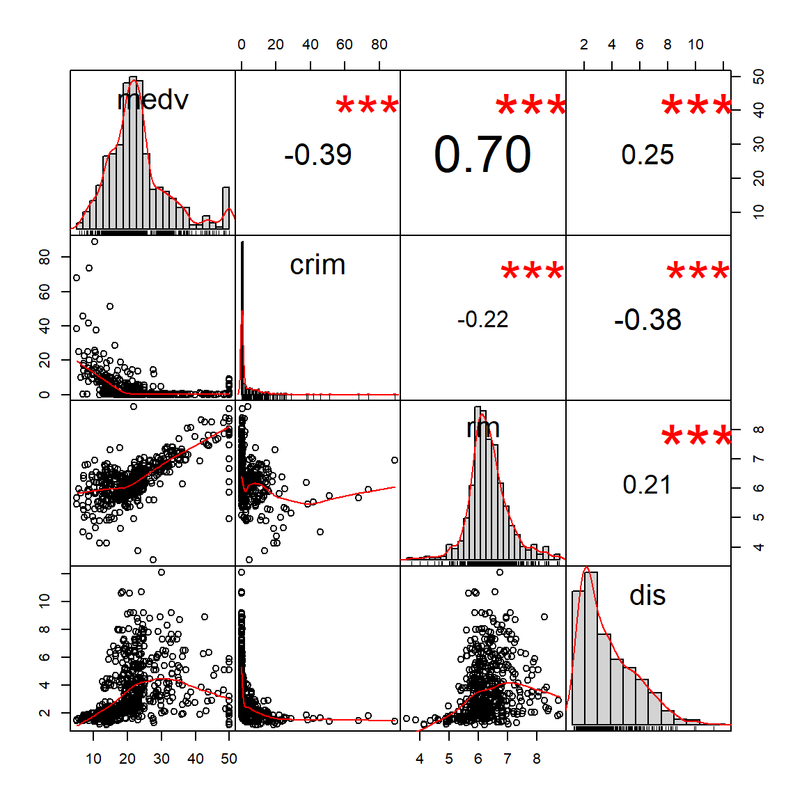
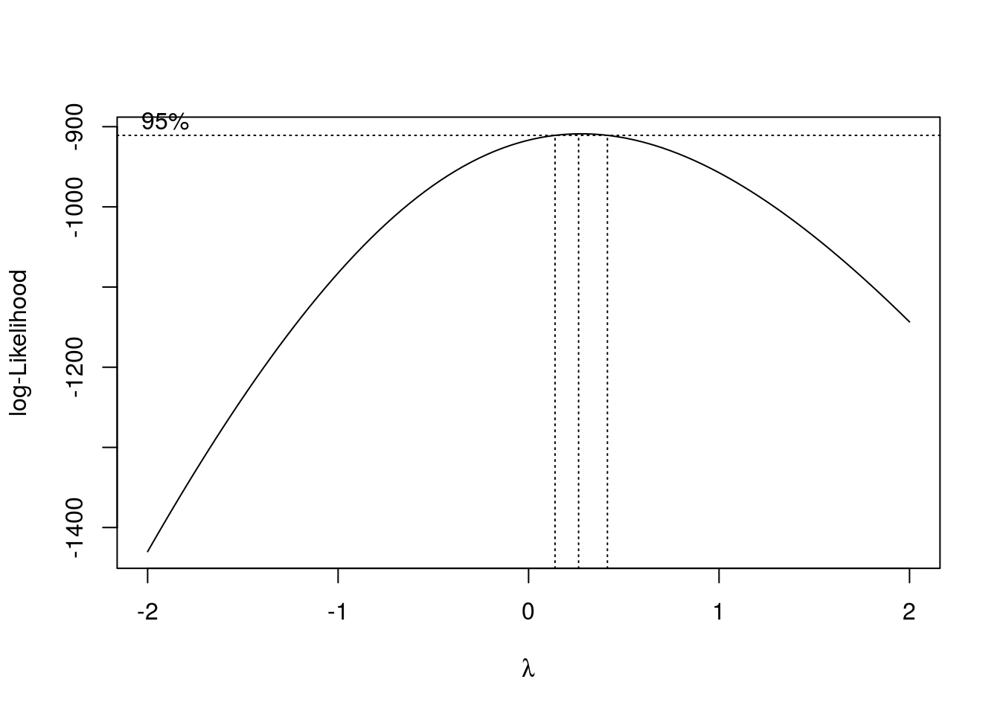

Chapter 4 Modeling Basics
4.1 Fitting Linear Regression
A simple linear regression assumes the underlying model \[Y = \beta_0 + {\boldsymbol\beta}^\text{T} X + \epsilon,\] where \(\beta_0\) is an intercept and \(\boldsymbol\beta\) is a vector of coefficients corresponds to each covariate. With observed data, we can estimate the regression coefficients. Let’s use a classical dataset, the Boston Housing data (Harrison Jr and Rubinfeld 1978) from the MASS package. The goal of this dataset is to model the median house value (medv) using other predictors.
library(MASS)
data(Boston)
# Fit a linear regression using all variables
fit = lm(medv ~ ., data = Boston)
summary(fit)##
## Call:
## lm(formula = medv ~ ., data = Boston)
##
## Residuals:
## Min 1Q Median 3Q Max
## -15.595 -2.730 -0.518 1.777 26.199
##
## Coefficients:
## Estimate Std. Error t value Pr(>|t|)
## (Intercept) 3.646e+01 5.103e+00 7.144 3.28e-12 ***
## crim -1.080e-01 3.286e-02 -3.287 0.001087 **
## zn 4.642e-02 1.373e-02 3.382 0.000778 ***
## indus 2.056e-02 6.150e-02 0.334 0.738288
## chas 2.687e+00 8.616e-01 3.118 0.001925 **
## nox -1.777e+01 3.820e+00 -4.651 4.25e-06 ***
## rm 3.810e+00 4.179e-01 9.116 < 2e-16 ***
## age 6.922e-04 1.321e-02 0.052 0.958229
## dis -1.476e+00 1.995e-01 -7.398 6.01e-13 ***
## rad 3.060e-01 6.635e-02 4.613 5.07e-06 ***
## tax -1.233e-02 3.760e-03 -3.280 0.001112 **
## ptratio -9.527e-01 1.308e-01 -7.283 1.31e-12 ***
## black 9.312e-03 2.686e-03 3.467 0.000573 ***
## lstat -5.248e-01 5.072e-02 -10.347 < 2e-16 ***
## ---
## Signif. codes: 0 '***' 0.001 '**' 0.01 '*' 0.05 '.' 0.1 ' ' 1
##
## Residual standard error: 4.745 on 492 degrees of freedom
## Multiple R-squared: 0.7406, Adjusted R-squared: 0.7338
## F-statistic: 108.1 on 13 and 492 DF, p-value: < 2.2e-16The output can be overwhelming for beginners. Here, by specifying the model with medv ~ ., we are using all variables in this data as predictors, except medv itself. And by default, an intercept term is also included. However, we could also specify particular variables as predictors. For example, if per capita crime rate by town (crim), the average number of rooms (rm) are used to predict the price, and the weighted mean of distances to five Boston employment centres (dis), along with an intercept term, we specify the following
##
## Call:
## lm(formula = medv ~ crim + rm + dis, data = Boston)
##
## Residuals:
## Min 1Q Median 3Q Max
## -21.247 -2.930 -0.572 2.390 39.072
##
## Coefficients:
## Estimate Std. Error t value Pr(>|t|)
## (Intercept) -29.45838 2.60010 -11.330 < 2e-16 ***
## crim -0.25405 0.03532 -7.193 2.32e-12 ***
## rm 8.34257 0.40870 20.413 < 2e-16 ***
## dis 0.12627 0.14382 0.878 0.38
## ---
## Signif. codes: 0 '***' 0.001 '**' 0.01 '*' 0.05 '.' 0.1 ' ' 1
##
## Residual standard error: 6.238 on 502 degrees of freedom
## Multiple R-squared: 0.5427, Adjusted R-squared: 0.5399
## F-statistic: 198.6 on 3 and 502 DF, p-value: < 2.2e-16To read the output from a linear model, we usually pay attention to several key information, such as the coefficient and the p-value for each variable, and the overall model fitting F statistic and its p-value, which is almost 0 in this case.
4.2 Model Diagnostics
To further evaluate this model fitting, we may plot the residuals (for assessing the normality) and the Cook’s distance for identifying potential influence observations.
# setup the parameters for plotting 4 figures together, in a 2 by 2 structure
par(mfrow = c(2, 2))
plot(fit)
R also provides several functions for obtaining metrics related to unusual observations that may help this process.
resid()provides the residual for each observationhatvalues()gives the leverage of each observationrstudent()give the studentized residual for each observationcooks.distance()calculates the influence of each observation
## 1 2 3 4 5 6 7 8
## -1.908839 -3.129506 3.596769 3.719837 5.286113 3.757775 1.523165 4.353400
## 9 10
## -1.732947 -2.519590## 1 2 3 4 5 6
## 0.002547887 0.002692042 0.005408817 0.005604599 0.006415502 0.004272416
## 7 8 9 10
## 0.004088718 0.004346169 0.007117245 0.006403949## 1 2 3 4 5 6 7
## -0.3061026 -0.5019650 0.5777474 0.5975886 0.8498652 0.6032833 0.2444363
## 8 9 10
## 0.6990195 -0.2785307 -0.4048546## 1 2 3 4 5 6
## 5.994417e-05 1.702892e-04 4.544127e-04 5.038330e-04 1.166558e-03 3.909005e-04
## 7 8 9 10
## 6.144012e-05 5.337764e-04 1.392832e-04 2.645454e-044.3 Variable Transformations and Interactions
It appears that the residuals are not normally distributed because the QQ plot deviates from the diagonal line quite a lot. Sometimes variable transformations can be used to deal with this issue, but that may not fix it completely. Plotting can be useful for detecting ill-distributed variables and suggest potential transformations. For example, we may use the correlation plot to visualize them
library(PerformanceAnalytics)
chart.Correlation(Boston[, c("medv", "crim", "rm", "dis")], histogram=TRUE, pch="+")
It looks like both crim and dis have heavy tail on the right hand side and could benefit from a log or a power transformation. variable transformations can be easily specified within the lm() function.
##
## Call:
## lm(formula = medv ~ log(crim) + rm + I(dis^0.5), data = Boston)
##
## Residuals:
## Min 1Q Median 3Q Max
## -18.767 -3.506 -0.589 2.501 40.035
##
## Coefficients:
## Estimate Std. Error t value Pr(>|t|)
## (Intercept) -25.1474 2.8674 -8.770 < 2e-16 ***
## log(crim) -1.5033 0.1864 -8.067 5.36e-15 ***
## rm 8.0520 0.4096 19.656 < 2e-16 ***
## I(dis^0.5) -2.1805 0.7644 -2.853 0.00451 **
## ---
## Signif. codes: 0 '***' 0.001 '**' 0.01 '*' 0.05 '.' 0.1 ' ' 1
##
## Residual standard error: 6.155 on 502 degrees of freedom
## Multiple R-squared: 0.5548, Adjusted R-squared: 0.5521
## F-statistic: 208.5 on 3 and 502 DF, p-value: < 2.2e-16Another approach is to consider polynomial transformations of the outcome variable, known as the Box-Cox transformation.
# explore the Box-Cox transformation
trans = boxcox(medv ~ log(crim) + rm + I(dis^0.5), data = Boston)
## [1] 0.2626263One can again reevaluate the model fitting results and repeat the process if necessary. However, keep in mind that this is could be a tedious process that may not end with a satisfactory solution.
To further improve the model fitting we may also consider iterations and higher order terms such as
fit = lm(medv ~ log(crim) + rm + rm*log(crim) + I(rm^2) +
I(dis^0.5) + as.factor(chas)*rm, data = Boston)
summary(fit)##
## Call:
## lm(formula = medv ~ log(crim) + rm + rm * log(crim) + I(rm^2) +
## I(dis^0.5) + as.factor(chas) * rm, data = Boston)
##
## Residuals:
## Min 1Q Median 3Q Max
## -26.476 -2.917 -0.486 2.414 35.630
##
## Coefficients:
## Estimate Std. Error t value Pr(>|t|)
## (Intercept) 72.0986 12.4270 5.802 1.17e-08 ***
## log(crim) 3.2224 1.1677 2.760 0.0060 **
## rm -23.0419 3.9298 -5.863 8.27e-09 ***
## I(rm^2) 2.3857 0.3072 7.766 4.66e-14 ***
## I(dis^0.5) -1.0768 0.6729 -1.600 0.1102
## as.factor(chas)1 14.6814 7.4142 1.980 0.0482 *
## log(crim):rm -0.7620 0.1845 -4.129 4.27e-05 ***
## rm:as.factor(chas)1 -1.6178 1.1357 -1.424 0.1549
## ---
## Signif. codes: 0 '***' 0.001 '**' 0.01 '*' 0.05 '.' 0.1 ' ' 1
##
## Residual standard error: 5.321 on 498 degrees of freedom
## Multiple R-squared: 0.6699, Adjusted R-squared: 0.6653
## F-statistic: 144.4 on 7 and 498 DF, p-value: < 2.2e-164.4 Model Selection
Suppose we have two candidate nested models, and we want to test if adding a set of new variables is significant in terms of predicting the outcome, this is essentially an F test. We can utilize the anova() function:
fit = lm(medv ~ crim + rm + dis, data = Boston)
fit2 = lm(medv ~ crim + rm + dis + chas + nox, data = Boston)
anova(fit, fit2)## Analysis of Variance Table
##
## Model 1: medv ~ crim + rm + dis
## Model 2: medv ~ crim + rm + dis + chas + nox
## Res.Df RSS Df Sum of Sq F Pr(>F)
## 1 502 19536
## 2 500 17457 2 2079.2 29.776 6.057e-13 ***
## ---
## Signif. codes: 0 '***' 0.001 '**' 0.01 '*' 0.05 '.' 0.1 ' ' 1It appears that adding the two additional variables chas and nox is significant. Selecting variables/models is a central topic in statistics. We could consider some classical tools such as the Akaike information criterion (Akaike 1998) or the Bayesian information criterion (Schwarz and others 1978). Incorporating the stepwise selection algorithm, we may find the best AIC model:
# fit a full model that contains all variables
full.model = lm(medv ~ ., data = Boston)
# select the best AIC model by stepwise regression
stepAIC = step(full.model, trace=0, direction="both")
# the best set of variables being selected
attr(stepAIC$terms, "term.labels")## [1] "crim" "zn" "chas" "nox" "rm" "dis" "rad"
## [8] "tax" "ptratio" "black" "lstat"4.5 Prediction
The predict() function is an extremely versatile function, for, prediction. When used on the result of a model fit using lm() it will, by default, return predictions for each of the data points used to fit the model.
# the fitted value from a model fitting
yhat1 = fit$fitted.values
# predict on a set of testing data
yhat2 = predict(fit)
# they are the same
all(yhat1 == yhat2)## [1] FALSEWe could also specify new data, which should be a data frame or tibble with the same column names as the predictors.
## 1
## 21.15216We can also obtain the confidence interval for the mean response value of this new observation
## fit lwr upr
## 1 21.15216 20.44473 21.8596Lastly, we can alter the level using the level argument. Here we report a prediction interval instead of a confidence interval.
## fit lwr upr
## 1 21.15216 4.995294 37.30903References
Akaike, Hirotogu. 1998. “Information Theory and an Extension of the Maximum Likelihood Principle.” In Selected Papers of Hirotugu Akaike, 199–213. Springer.
Harrison Jr, David, and Daniel L Rubinfeld. 1978. “Hedonic Housing Prices and the Demand for Clean Air.” Journal of Environmental Economics and Management 5 (1): 81–102.
Schwarz, Gideon, and others. 1978. “Estimating the Dimension of a Model.” The Annals of Statistics 6 (2): 461–64.